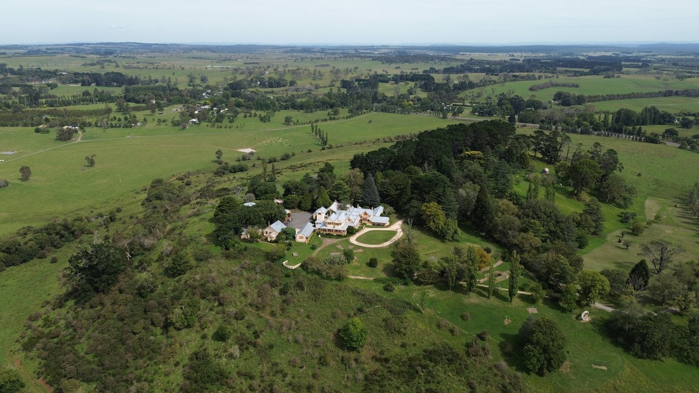
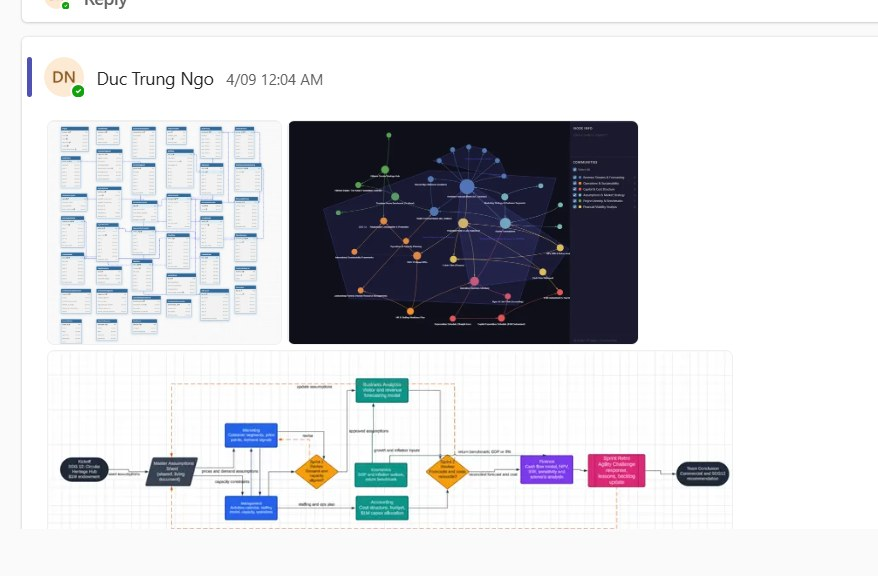
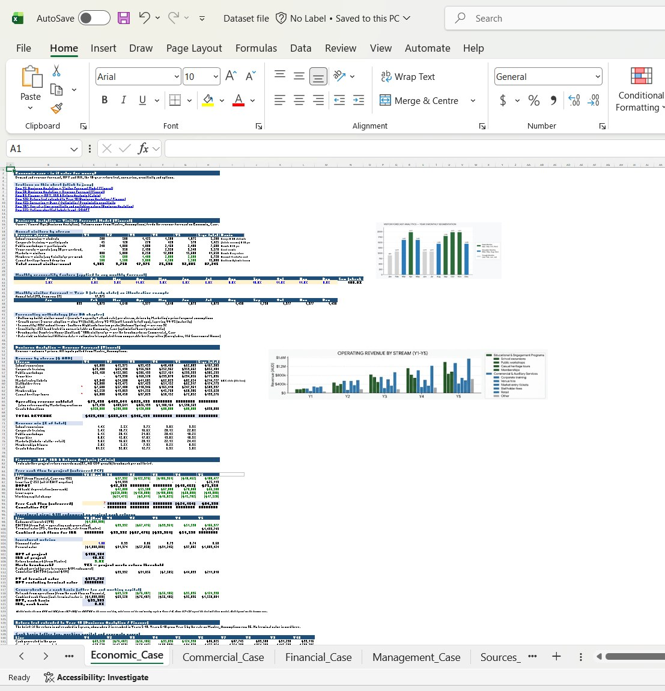
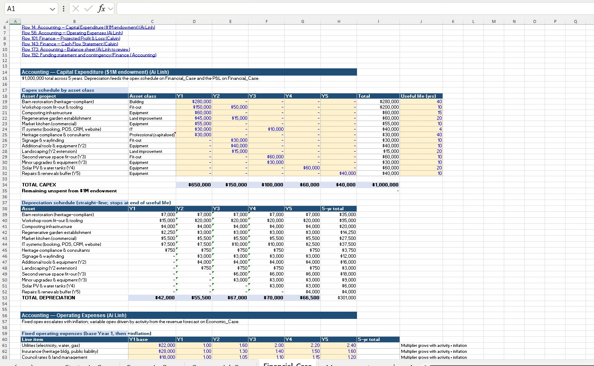
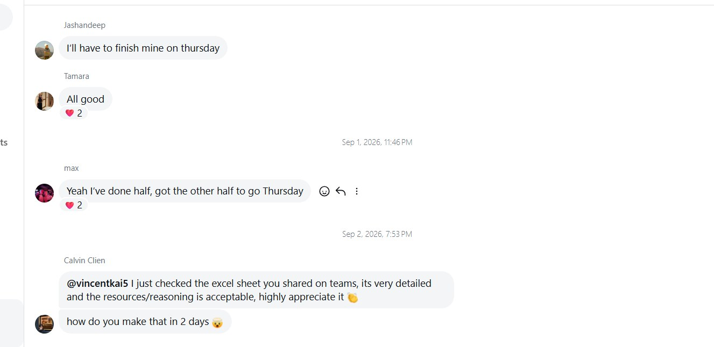
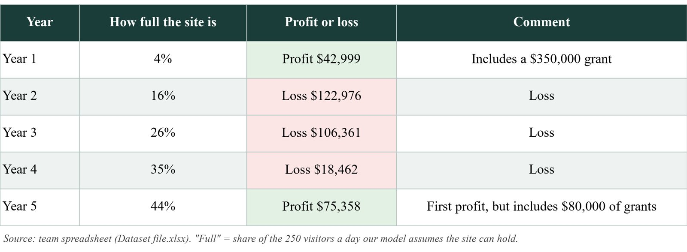
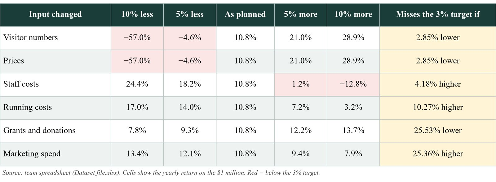
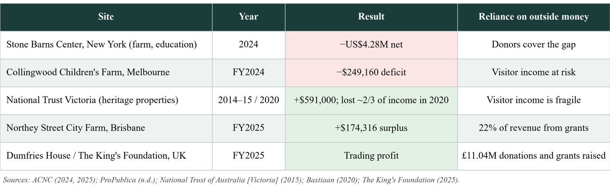
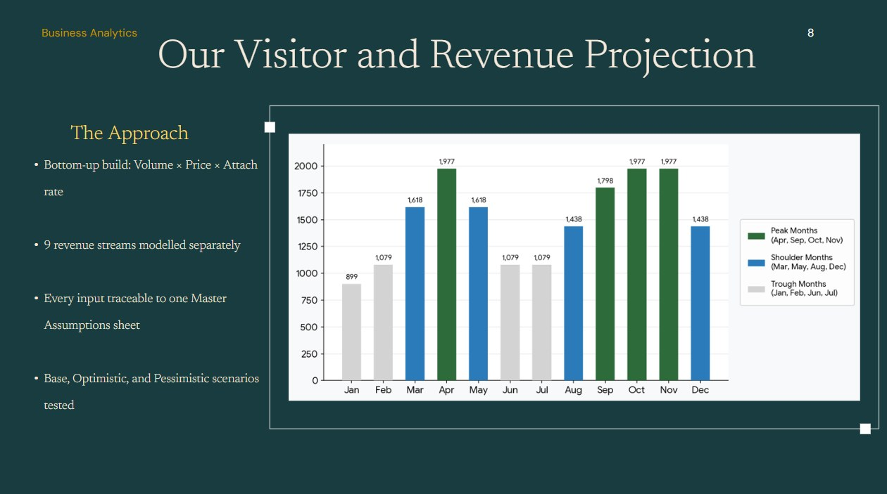
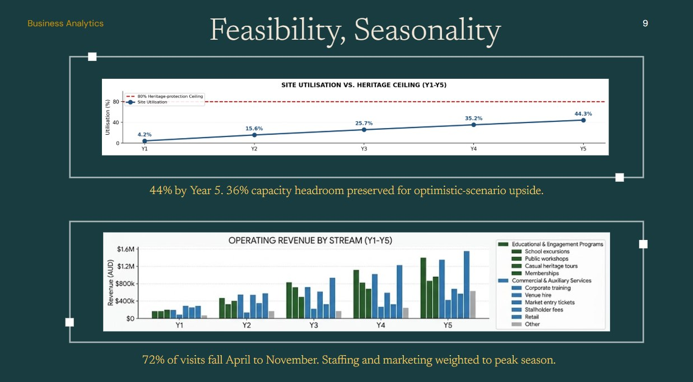

Real clients, real decisions
This semester my six-person, six-discipline team (Team 2B) worked for a real client in MQBS3010. These two projects show how I work: I build the numbers everyone relies on, then I test them.
Hillview Estate Agility Challenge
Hillview Circular Heritage Hub
A business plan to turn Hillview Estate into a heritage, education and circular-economy hub, funded by a $1 million endowment plus grants.
View the project siteCan it pay for itself?
The client needed to know whether the hub could earn a return on the endowment while protecting the heritage site.Business Analytics lead
I built the shared dataset every chapter relied on: the visitor forecast, revenue forecast, return test and sensitivity testing.Six views, one model
Marketing gave me prices, Management gave staffing and Accounting gave costs. My job was keeping everyone's numbers consistent.How I built it
Before building anything, I mapped how the model would work: one Master Assumptions sheet that every discipline feeds, with checkpoints where Finance and Accounting review the forecasts. I shared these diagrams with the team on 4 September.




What I found
The headline return looked healthy, but the stress test told a different story. The model only makes a profit in Year 1, because of a $350,000 grant, and in Year 5. Small changes in visitors or prices swing the return from strongly positive to negative. I presented this honestly, because a client should see the worst case as well as the best.


Don't let profit swallow the purpose.
The fastest way to make Hillview profitable was to fill the site with more visitors than the heritage could handle. Two teammates and I agreed on a cap to protect it. Before this project I treated a higher return as the goal. I now see this trap has a name, mission drift, and I know to watch for it in any project with a social purpose.
I checked our plan against real sites
Before trusting our forecast, I researched how similar heritage and farm projects actually perform. Most rely on grants or donors to survive, which supported my view that impact, not profit, is the fair test for Hillview.

Agility Challenge: a consultation deck for The King's Foundation
A surprise brief with a short deadline: turn our Hillview plan into a branded slide deck for the client. Our team had no historical data and a blank page.
- Built the team's master dataset from comparable heritage sites, with forecasts and sensitivity testing.
- Designed Slides 8 and 9: the visitor and revenue projection, and the feasibility analysis.
- Modelled nine revenue streams separately across peak, shoulder and quiet months, using Volume × Price × Attach rate.
- Showed site use growing from 4.2% in Year 1 to 44% by Year 5, staying below the heritage limit.
The numbers unlocked the team.
We started slowly, with overlapping slides and too much text. Once I shared one validated dataset, everyone worked from the same assumptions and the deck came together.
I kept my slides to a few words and let the charts do the talking, because a consultation deck should be quicker to read than the report behind it.


What I'd do differently
The Clinical Research Nurse at Woolcock Institute said in Week 6 that breaking a problem into smaller parts makes it approachable. Our team spent the first half of the challenge without a clear process.